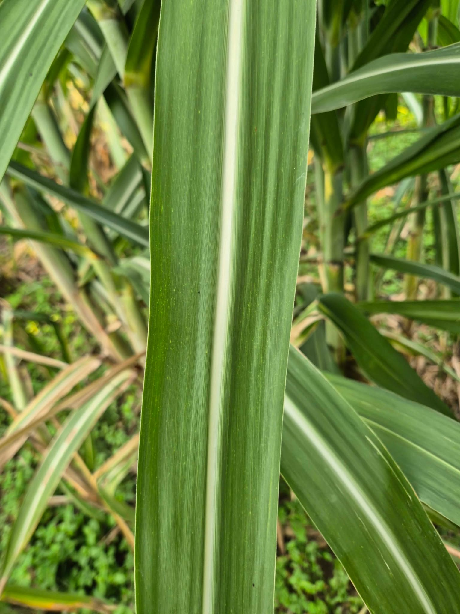
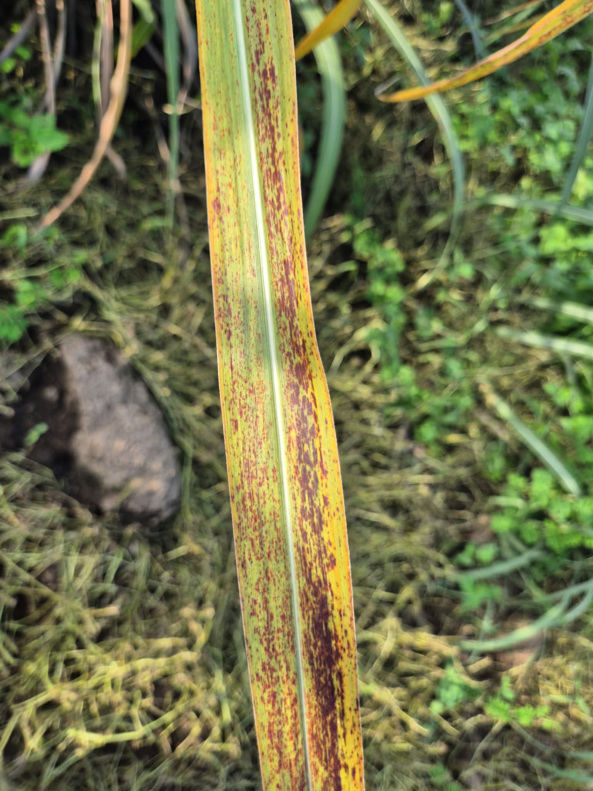
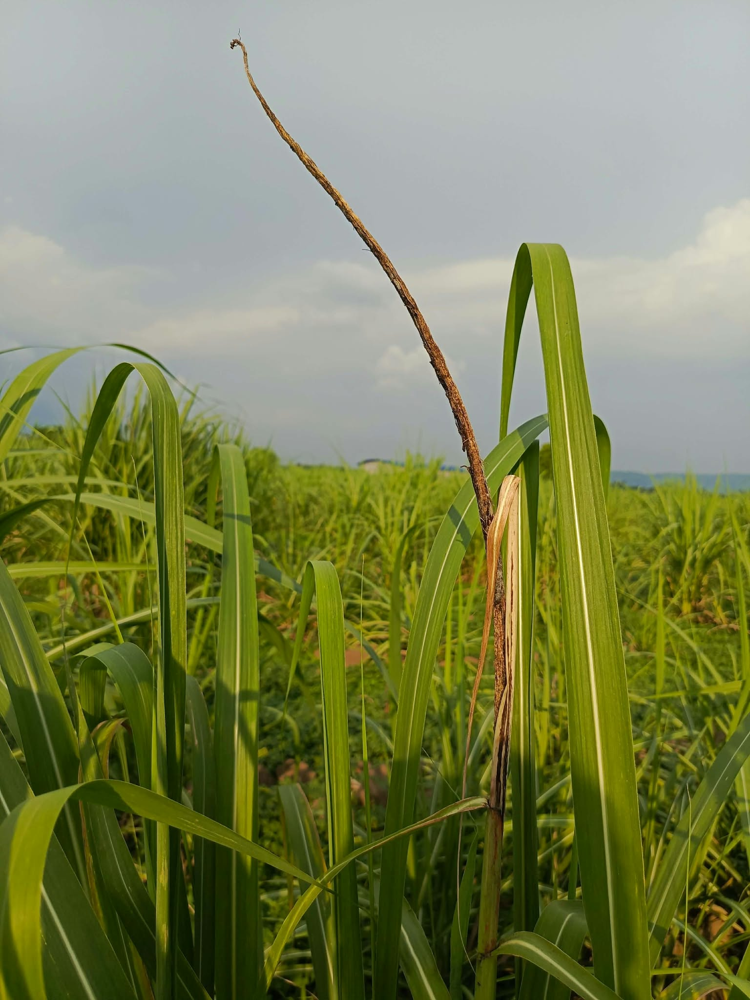

Plan · caneguard-web · Web education gallery
A public landing page that teaches sugarcane before anyone signs in
Today, opening the root URL / while signed out sends you straight to /login. Under this plan, / becomes a public landing page built around the Field Guide, written for young people in the Nasugbu mill district who may take over the farm. Staff sign-in moves to a button in the navigation bar.
Task: web education gallery Source of truth: mobile Field Guide (5 entries) Not built yet: review this plan first
In short
- Move the
/route outsideRequireAuthand render LandingPage there. - Add public
/guideand/guide/:entryIdpages that port the mobile entries: reference images, symptoms, prevention, management and sources. - Add four interactive learning blocks: a plant anatomy explorer, a growth-cycle stepper, a “Which one is it?” photo quiz and a history timeline.
- Close with a “carry the legacy” section: block farming, the SIDA scholarship and careers in the sugar industry.
- Give the public pages their own Paper/Dark toggle, stored separately from the signed-in workspace theme.
1 · Current vs target
What changes in the router
Today: src/app/appRoutes.tsx
The index route is <Navigate to=/dashboard> inside <RequireAuth>, so visitors who are not signed in see the login page and nothing else.
Target
/login already sends a signed-in user on to their destination (LoginPage.tsx:59), so the sign-in flow itself does not change. After logout the user still lands on /login.
1b · Appearance
A public theme toggle that never touches the workspace theme
Today there is one theme: paper | dark, stored under caneguard.appearance.preferences (src/theme/themePreference.ts) and painted on <html data-theme> by the boot script in index.html before React loads. The public pages get their own stored choice. Changing it on the landing page leaves the signed-in workspace exactly as the user set it, and the other way round. Paper stays the default for both, and neither follows the OS setting.
How it works
src/theme/publicThemePreference.ts: the same versioned, zod-validated read/save as the workspace store, under the new key, with a separate in-memory store and its ownusePublicTheme()hook.PublicLayout(the shared route element for/and/guide/*) paints the public theme on<html>while it is mounted and callsapplyTheme(getTheme())on unmount. Clicking “Staff sign in” or “Open workspace” therefore lands on the workspace theme.- The boot script in
index.htmlpicks the key fromlocation.pathname, so a dark landing page paints dark before React loads, with no paper flash. - The toggle sits in the landing page’s nav bar as a two-state switch (☀ Paper / ☾ Dark), with
aria-pressedand the focus ring fromtokens.css. - The
/loginpage keeps the workspace theme, because it is the doorway into the workspace.
What the tests prove
- Choosing Dark on
/writes onlycaneguard.public.appearance. The workspace key is byte-identical before and after. - Public Dark with workspace Paper: navigating
/→/login→/dashboardpaints paper. Going back to/paints dark again. - Workspace Dark with public Paper: the reverse holds.
- A corrupt, stale-version or blocked store falls back to paper without throwing, mirroring
themePreference.test.ts. - The boot script picks the right key for
/,/guide/rustand/dashboard.
Try it: the ☀/☾ switch in the mock below flips only the mock site, and this plan page stays paper.
2 · Who this is for
The audience and why it matters now
Youth in farming families
High-school and college-age children of planters and farm workers in the SRA Don Pedro mill district (Nasugbu, Batangas). They are on phones, read English and Filipino, and have never seen a mill-district report.
A district under pressure
The CADPI mill in Nasugbu stopped milling in early 2023. A farmers’ group put the affected cane area at about 10,980 ha. Nasugbu cane is now milled at Balayan. Across the country, a 2022 commentary put the average Filipino farmer’s age near 60.
Field reporters & teachers
The same entries a field reporter reads on the mobile app, now viewable on a projector or laptop for barangay seminars and school agriculture classes.
The page has to stay honest on two points. First, CaneGuard’s AI output is decision support, not a diagnosis. Second, every piece of advice follows the mobile guide’s rules: no chemical names, doses or brands, and a referral to the agriculture office.
3 · Proposed page
The landing page, section by section
This is an interactive mock in CaneGuard’s own tokens (Poppins, structural green, cream). Click through it: every widget works on the real field-guide content and photos.
Nasugbu · Batangas · Sugarcane country
Learn the cane. Keep the legacy growing.
Find out how sugarcane grows, how to spot the five conditions our field team watches for, and how the next generation of farmers can keep Nasugbu’s fields alive.



What is sugarcane?
A giant grass that stores sunlight as sugar
Sugarcane (Saccharum spp.) is a tall perennial grass. It is planted from stalk cuttings called setts, not from seed. Its stalks fill with sucrose, the mill crushes them for juice, and the leftover fibre (bagasse) fuels the mill’s boilers. After harvest the same stool regrows as a ratoon crop. Tap a part of the plant to see what lives there and what to check.
From sett to mill
One crop, four stages
Bar widths show typical relative length, not exact months. Exact Nasugbu stage windows still need confirmation from the office.
Field Guide
Know it before you report it
Train your eye
Which one is it?
Look closely at the photo, then pick the matching entry.
Our story
Sugar and the Philippines
For the next generation
Ways to stay in cane, and grow with it
Study on a SIDA scholarship
Under RA 10659, children and dependents of small sugarcane farmers and industry workers can apply for CHED–SRA grants.
Join a block farm
Small farms of 2–3 ha pool into cooperative blocks to share machines, credit and better cane prices.
Scout and report
Walk the field monthly (RSSI: weekly) and report what you see. Early reports protect the whole district.
Build a career
Agronomy, mill engineering, SRA research, drone mapping and the kind of AI that CaneGuard uses.
From a phone photo to office follow-up
4 · Content inventory
Where every section’s content comes from
| Section | Content | Source | Status |
|---|---|---|---|
| A Hero stats | Area, raw sugar, harvest window | SRA Sugar Statistics CY 2024–25, final crop estimate | Verified figure |
| B Anatomy | Where-to-look mapping per plant part | Mobile whereToLook fields, one per entry | Exists |
| C Growth | Germination, tillering, grand growth, maturity; SRA planting windows (Nov/Jan/Mar) | SRA research comparing planting seasons; Negros phenology study | Stage months need office confirmation |
| D Gallery + /guide/:id | Healthy, Mosaic, Rust, Smut, RSSI: summary, signs, where to look, impact, prevention, management, long-form guide, sources | caneguard-mobile/src/features/field-guide/constants/* | Exists (mobile) |
| D Images | 3 bundled references and 7 drop photos (≤3 per entry) | assets/images/field-guide/MANIFEST.csv | Credit not recorded (recorded:false) |
| E Quiz | The same photos, with one cue line per answer | Derived from gallery signs[0] | No new content |
| F History | Austronesian crop → 1855 Iloilo port → Negros boom → RA 10659 → RSSI → CADPI closure | Public reporting (Inquirer, Philstar, Rappler), SRA history page, mobile RSSI entry | Needs adviser review |
| G Legacy | SIDA scholarship, block farming, careers | RA 10659; CHED SIDA-SGP; SRA HRD program | Check latest SRA circular |
| Smut, RSSI sources | SRA booklet pp. 21–22; RSSI brochures 2025/2026 | Registered as awaiting-supply | Missing: page shows “not supplied yet” |
5 · Implementation
How it gets built
Public routes + gallery
appRoutes.tsx: add public{ index: true, element: <LandingPage/> },guideandguide/:entryIdoutsideRequireAuth, and drop the old index redirect.routes.ts: addhome,guideandguideEntry(id).src/features/field-guide/: port the mobile types and entries as static TS with the samecontentVersion. Photos go insrc/assets/field-guide/as responsive WebP and JPEG, with lazy loading.- Unknown
:entryIdrendersNotFoundPage. PublicLayoutwith its own nav bar: “Staff sign in”, or “Open workspace” when signed in.- A public theme store and toggle, kept separate from the workspace theme (section 1b).
Interactive learning
- Anatomy explorer: inline SVG with keyboard-focusable parts and a live region.
- Growth stepper and history timeline: data arrays, no new library.
- Quiz: local state only, nothing persisted, works without sign-in.
- Respect
prefers-reduced-motion. Paper and dark both reuse the existingtokens.csstoken blocks, with no new palette. - English first. A Filipino toggle follows here once the office has reviewed the translation.
Office-authored content
- A public read-only endpoint (e.g.
GET /api/v1/public/field-guide) serves office-edited entries and photos. - Mobile and web read from it, which ends drift between the two copies. This is the end state the mobile drop-folder README already describes.
- Needs a throttle, cache headers and an admin authoring UI.
Tests and verification
| Check | What it asserts |
|---|---|
appRoutes.test.tsx | A signed-out visitor at / sees the landing page, not /login. /guide/rust renders without auth. /dashboard still redirects to /login. |
| Field-guide content test | Ports the mobile forbidden-pattern test: no active ingredient, dose or brand name. Every sourceIds entry resolves. Every image has a caption used as its alt text. |
| Component tests | Filter chips, entry detail tabs, the quiz’s correct and wrong states, and keyboard activation of anatomy parts. |
publicThemePreference.test.ts + layout test | The two theme stores stay independent in both directions. The workspace theme is restored on leaving the public area, and a corrupt payload falls back to paper. See section 1b. |
test:design-spine | Unaffected: the landing page is not the dashboard. Run it anyway, since index.css changes. |
| Browser check | Landing at 360 px and 1280 px, light and dark; deep link to /guide/smut; “Staff sign in” leads to login, then the dashboard. |
Risks
contentVersion in sync and recording the source mobile commit in a header comment. Phase 2 removes the drift.MANIFEST.csv row has an empty licence. Fill in the creator and licence before launch, or label photos “credit pending”./guide/* must reach index.html on the production host. Check the deploy config and CSP for image sources.<html data-theme>. If PublicLayout fails to restore the theme on unmount, the dashboard shows the landing page’s theme. The navigation tests in section 1b pin this behaviour.6 · Decided
Decisions locked for the build
| Question | Decision |
|---|---|
What a signed-in user sees at / | The landing page. The nav button reads “Open workspace” instead of “Staff sign in”. |
| Language | English first, with a Filipino toggle in Phase 1b after office review. |
| Content source | A static port of the mobile content now; office-authored content from the API in Phase 2. |
| Interactive blocks in v1 | All of them: gallery and entry pages, anatomy explorer, growth stepper, quiz, history timeline and legacy pathways. |
| Theme | A separate public Paper/Dark toggle, stored apart from the workspace theme. Paper is the default and the OS setting is not followed (section 1b). |
Annotate anything you still want changed. Otherwise say go and I’ll start Phase 1 and 1b on this branch.
Research used in this plan
Sources
- SRA, Philippine Sugar Statistics CY 2024–25: area ≈392,356 ha and ≈1.87M MT raw sugar (final estimate; other bulletins differ)
- Inquirer: over 13,000 lose livelihoods after the Nasugbu mill shutdown · Rappler: CADPI closes · Inquirer: RHI selling the Batangas mill · PNA: displaced Batangas farmers find other jobs
- Manila Bulletin (2022 commentary): average Filipino farmer age near 60 (an opinion piece, not an official statistic)
- SRA research on planting seasons and the Negros phenology study
- RA 10659, the Sugarcane Industry Development Act · CHED SIDA-SGP · SRA HRD program
- Sugar industry of the Philippines (Wikipedia overview) · Nicholas Loney · SRA history
- Field Guide sources already in the mobile app: SRA RSSI profile and awareness campaign, Sugar Research Australia (rusts, mosaic), LSU AgCenter IDM, FPA register